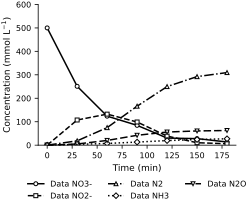
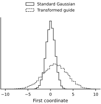
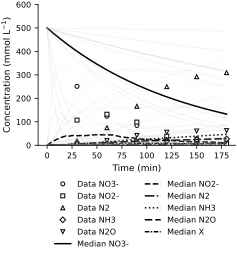
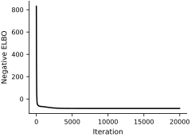
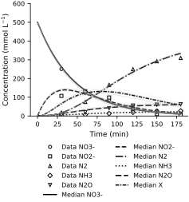
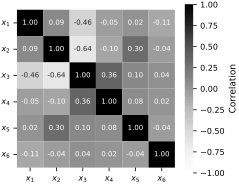

Example: The Catalysis Problem Using Variational Inference#
Let’s do variational inference for the catalysis problem, using the data reported by Tsilifis et al. (2016).
Model for data generation#
The model was described in detail in the earlier example of the classical approach to inverse problems. We’ll briefly summarize it here.
Catalysis dynamics#
Recall that we have modeled the production of various chemicals in a catalytic reaction with the following ODE:
where \(z \in \mathbb{R}^6\) are the concentrations of each chemical. The linear dynamics \(A\) depend on some (unknown) kinetic rates \(k \in \mathbb{R}_+^5\) as
Inverse problem setup#
We want to infer the rates, \(k\), from data. For numerical stability, let’s work with the scaled quantities \(\tilde{z} = \frac{z}{500}, \tilde t = \frac{t}{180}\), and \(\tilde k = 180k\) so that our ODE becomes
The dot now denotes differentiation with respect to \(\tilde t\). The concentration scale cancels from this linear ODE. We’ll denote its solution by \(\tilde z(\tilde t; \tilde k)\). The full probabilistic model is
where \(\gamma=2\), \(\lambda=1/0.005=200\) is the exponential rate (so the prior mean of \(\tilde\sigma^2\) is \(0.005\)), and \(Y \in \mathbb{R}^{5 \times 6}\) contains the scaled observed concentrations. The species indices are \((s_1,\ldots,s_5)=(1,2,4,5,6)\), in the order nitrate, nitrite, nitrogen, ammonia, and nitrous oxide. We observe them at 6 equally spaced times \(\mathbf{\tilde t} = \left( \frac{1}{6}, \frac{1}{3}, \frac{1}{2}, \frac{2}{3}, \frac{5}{6}, 1 \right)\).
Finally, let’s follow the common practice of mapping all random variables to a standard Gaussian random vector \(x \in \mathbb{R}^6\). To this end, let \(T\) be the transformation such that
and
Our goal is now to use variational inference to characterize the posterior
The transformation uses \(\tilde k_i=\exp(\gamma x_i)\) and \(\tilde\sigma^2=-\log\Phi(-x_6)/\lambda\), where \(\Phi\) is the standard normal cumulative distribution function. These formulas give exactly the stated priors. Physical rates and noise variance are recovered as \(k=\tilde k/180\) and \(\sigma^2=500^2\tilde\sigma^2\). From now on, we’ll call \(x\) the model parameters. Let’s import the data and define the solver:
As a reminder, here is what the data look like:

Here is the negative log posterior, up to an additive constant independent of \(x\). With \(m=30\) scalar observations and residual sum of squares \(R(x)\), its likelihood contribution is
The logarithmic term must be retained because we infer the noise variance.
def T(x, gamma, lambda_):
"""Transforms a standard normal random vector into the parameters of the model."""
# Get reaction rates
k = jnp.exp(x[:-1]*gamma)
# Get measurement noise variance
sigma2 = -jax.scipy.special.log_ndtr(-x[-1]) / lambda_
return k, sigma2
# Negative log posterior
def minus_log_post(x, z0, y, t, gamma, lambda_):
"""Negative log posterior of the catalysis model."""
# Negative log prior
prior = 0.5*jnp.sum(x**2)
# Get reaction rates and measurement noise variance
k, sigma2 = T(x, gamma, lambda_)
# Simulate physical process
states = solve_catalysis(t, k, z0)
obs_states = jnp.hstack([states[:, :2], states[:, 3:]]) # We don't observe the third component
# Negative log likelihood
likelihood = (0.5 * jnp.sum((obs_states.T - y)**2) / sigma2
+ 0.5 * y.size * jnp.log(sigma2))
# Total negative log posterior
posterior = likelihood + prior
return posterior
# Check the likelihood against independent Normal log-density evaluations.
for check_x in (jnp.zeros(6), jnp.array([0.2, -0.3, 0.1, 0.4, -0.2, -1.0]),
jnp.array([-0.2, 0.3, 0.2, -0.1, 0.1, 1.0])):
check_k, check_sigma2 = T(check_x, model_kwargs['gamma'], model_kwargs['lambda_'])
check_states = solve_catalysis(t_obs_scaled, check_k, z0_scaled)
check_mean = check_states[:, jnp.array([0, 1, 3, 4, 5])].T
reference_nlp = (-jstats.norm.logpdf(Y_obs_scaled, check_mean, jnp.sqrt(check_sigma2)).sum()
- jstats.norm.logpdf(check_x).sum())
omitted_constant = 0.5 * (Y_obs_scaled.size + check_x.size) * jnp.log(2 * jnp.pi)
assert jnp.allclose(minus_log_post(check_x, **model_kwargs) + omitted_constant,
reference_nlp, atol=1e-10)
print('Normalized-likelihood checks passed for all three test points.')
Normalized-likelihood checks passed for all three test points.
Numerical reliability#
This linear system has the solution \(\tilde z(\tilde t)=\exp(\tilde t A(\tilde k))\tilde z(0)\), where the matrix exponential propagates the initial state. We evaluate that solution directly, avoiding time-step failures when the reaction rates differ greatly. The implementation also supports automatic differentiation.
A numerical failure does not establish that a parameter has low posterior probability. Silently discarding failed evaluations can change the variational objective. We therefore stop on nonfinite values and check the fitted guide’s trajectories and gradients for finite values. Finite values alone do not establish posterior accuracy; the Gaussian guide remains an approximation.
Full-rank multivariate Gaussian guide#
Let’s choose the guide to be a multivariate normal distribution, i.e.,
where \(\phi \in \mathbb{R}^{27}\) are the guide parameters (and \(x\) are the model parameters). The mean, \(\mu\), of the guide is parameterized as
We’ll represent the covariance matrix, \(\Sigma_\phi\), with its Cholesky decomposition
and we’ll parameterize the Cholesky factor \(L_\phi\) as
Parameterizing this way ensures the covariance matrix is positive definite. We now have a parameterized guide \(q_\phi\), where \(\phi\) fully specifies a multivariate normal distribution. Here it is:
class FullRankGaussianGuide(eqx.Module):
"""Class that represents a multivariate normal guide with variational parameters phi."""
guide_params: jnp.ndarray
num_model_params: int = eqx.field(static=True, default=None)
def __post_init__(self):
if self.guide_params.shape[0] != self.get_num_guide_params(self.num_model_params):
raise ValueError("The length of phi is not consistent with the number of parameters.")
def logprob(self, model_params):
"""The log probability density of the guide."""
return jax.scipy.stats.multivariate_normal.logpdf(model_params, self.mu, self.Sigma)
def sample(self, key, num_samples):
"""Samples from the guide."""
return jr.multivariate_normal(key, self.mu, self.Sigma, shape=(num_samples,))
def forward(self, epsilon):
"""Transforms a multivariate normal sample to a sample from the guide, as per the reparameterization trick."""
return self.mu + jnp.dot(self.L, epsilon)
@property
def mu(self):
"""The mean of the guide."""
return self.guide_params[:self.num_model_params]
@property
def Sigma(self):
"""The covariance of the guide."""
L = self.L
return jnp.dot(L, L.T)
@property
def L(self):
"""The Cholesky decomposition of the covariance of the guide."""
# The diagonal
ell = jnp.exp(self.guide_params[self.num_model_params:2*self.num_model_params])
L = jnp.diag(ell)
# The lower triangular part
L = L.at[jnp.tril_indices(self.num_model_params, -1)].set(self.guide_params[2*self.num_model_params:])
return L
@classmethod
def from_mean_covariance(cls, mu, Sigma):
"""Constructs a guide with a given mean and covariance. Useful for initializing phi to a reasonable value."""
L = jnp.linalg.cholesky(Sigma)
ell = jnp.diag(L)
tri = L[jnp.tril_indices(L.shape[0], -1)]
guide_params = jnp.hstack([mu, jnp.log(ell), tri])
return cls(guide_params, mu.shape[0])
@staticmethod
def get_num_guide_params(num_model_params):
"""Return the number of guide parameters there are."""
num_mu_params = num_model_params
num_L_params = num_model_params*(num_model_params + 1)//2
return num_mu_params + num_L_params
# Test
_q_test = FullRankGaussianGuide(guide_params=jnp.arange(27, dtype=float), num_model_params=6)
assert jnp.all(jnp.isclose(_q_test.guide_params, FullRankGaussianGuide.from_mean_covariance(_q_test.mu, _q_test.Sigma).guide_params))
The FullRankGaussianGuide represents a Gaussian distribution with a full covariance matrix.
To create a full-covariance Gaussian guide for 6 model parameters \(x\), we need 27 guide parameters \(\phi\) (6 for the mean and 21 for the covariance):
q = FullRankGaussianGuide(guide_params=jnp.ones(27), num_model_params=6)
q
FullRankGaussianGuide(guide_params=f64[27], num_model_params=6)
Now that we’ve initialized the guide \(q_\phi\), we can sample from it:
key, subkey = jr.split(key)
q.sample(subkey, num_samples=10) # (num_samples, num_model_params)
Array([[-2.8079978 , 3.49208962, 2.72967246, 2.2010525 , 2.52837572,
3.52938305],
[ 3.34280187, 5.18826966, -0.80306875, 4.75388514, 0.75643109,
3.13978265],
[-0.48645701, 1.57155862, 1.76209927, 0.93533241, 3.58083797,
3.06905721],
[ 6.25103529, 7.26271346, 8.3119131 , 6.28970767, 8.18207679,
7.91590921],
[ 2.94317353, 7.92587719, 4.90180311, 8.08421901, 7.18992512,
8.8179723 ],
[ 0.41155856, -0.63177211, -4.01889174, 0.27839716, -3.08971887,
-4.33044549],
[ 4.76008462, 2.67552553, 1.09574005, 0.36490992, 1.95640742,
3.65516029],
[ 3.43887376, 3.11580037, 1.24335608, 0.36927497, 0.11001628,
-1.24456638],
[ 2.88484058, 0.32565137, 5.67480696, 5.50366196, 9.81397252,
3.34967173],
[ 1.41480539, -1.5567134 , -0.43071873, -4.09773821, -1.01897203,
-3.778782 ]], dtype=float64)
We can also compute the log probability of some \(x\):
q.logprob(jnp.zeros(6)) # log probability of the model parameters
Array(-11.62587234, dtype=float64)
We can also transform a standard Gaussian random sample \(\epsilon\) to a sample from the guide \(x=g_\phi(\epsilon)\).
This is the reparameterization trick, and it is implemented by the forward method.
See Basics of Variational Inference for more details.
# Sample from standard Gaussian
key, key1 = jr.split(key)
epsilon = jr.normal(key1, shape=(10_000, 6)) # (num_samples, num_model_params)
# Transform to the guide samples
guide_samples = vmap(q.forward)(epsilon) # (num_samples, num_model_params)
array([<Axes: xlabel='First coordinate'>], dtype=object)

Finally, we can set the guide to a particular mean and covariance. Let’s initialize to a standard Gaussian:
# Set the initial guide to a standard Gaussian
q_init = FullRankGaussianGuide.from_mean_covariance(mu=jnp.zeros(6), Sigma=jnp.eye(6))
Okay, we now have a better feel for what FullRankGaussianGuide is.
We’ll be using each of the showcased methods (sample, logprob, and forward) as part of our VI implementation.
First, though, let’s plot a few concentration-vs-time trajectories, sampled from our (untrained) guide.
(And coincidentally, these are also samples of our model prior because we had carefully defined the transform \(T\) so that \(x \sim \mathcal{N}(0, I)\).)
key, subkey = jr.split(key)
plot_guide_samples(q=q_init, num_samples=50, key=subkey)

The prior seems reasonable. If we didn’t have the data, any of these trajectories could be plausible.
Maximizing the ELBO#
The goal of variational inference is to find optimal parameters \(\phi\) so that the guide is as close as possible to the true posterior \(p(x|Y).\)
We do this by maximizing the ELBO with respect to \(\phi\). See Basics of Variational Inference for a review of this construction. Here, we’ll just focus on the code implementation:
# Minimizing the negative ELBO is equivalent to maximizing the ELBO.
def neg_elbo(guide_params, epsilon, model_kwargs, num_model_params):
"""The integrand of the negative reparameterized ELBO, f(g_phi(xi)).
Parameters
----------
guide_params : jnp.ndarray
The guide parameters. (Denoted as ϕ in the notes.)
epsilon : jnp.ndarray
The standard Gaussian sample to be transformed to a guide sample.
model_kwargs : dict
The keyword arguments for the model.
num_model_params : int
The number of model parameters. (The dimension of x in the notes.)
Returns the negative ELBO.
"""
q = FullRankGaussianGuide(guide_params=guide_params, num_model_params=num_model_params)
x = q.forward(epsilon)
return minus_log_post(x, **model_kwargs) + q.logprob(x)
We are now ready to do variational inference:
def step(carry, _, optim, batch_size, model_kwargs, num_model_params):
"""A single optimization step."""
guide_params, opt_state, key = carry
# Sample latent variable ϵ
key, subkey = jr.split(key)
epsilon = jr.normal(subkey, shape=(batch_size, num_model_params))
# Compute ELBO gradient estimate
neg_elbo_val, neg_elbo_grad = tree.map(
lambda x: jnp.mean(x, axis=0),
vmap(value_and_grad(neg_elbo), in_axes=(None, 0, None, None))(guide_params, epsilon, model_kwargs, num_model_params)
)
# Update variational parameters phi
updates, opt_state = optim.update(neg_elbo_grad, opt_state)
guide_params = optax.apply_updates(guide_params, updates)
return (guide_params, opt_state, key), neg_elbo_val
# Setup
schedule = optax.exponential_decay(2e-2, transition_steps=5000, decay_rate=0.6)
optim = optax.adam(schedule)
step_frozen_args = jit(partial(step, optim=optim, batch_size=32, model_kwargs=model_kwargs, num_model_params=6))
key, subkey = jr.split(key)
vi_state = (q_init.guide_params, optim.init(q_init.guide_params), subkey)
neg_elbo_vals = []
print_every = 100
num_iter = 20000
# Run variational inference loop
for i in range(num_iter):
vi_state, neg_elbo_val = step_frozen_args(vi_state, None)
if not bool(jnp.isfinite(neg_elbo_val)) or not bool(jnp.all(jnp.isfinite(vi_state[0]))):
raise FloatingPointError('Nonfinite VI step; diagnose the numerical failure before continuing.')
neg_elbo_vals.append(neg_elbo_val)
if (i + 1) % print_every == 0:
print(f"Iteration {(i + 1):4d}/{num_iter:4d} \t Negative ELBO: {jnp.mean(jnp.array(neg_elbo_vals[-print_every:])):.2f}")
# Extract optimized guide parameters and ELBO values
phi_opt, _, _ = vi_state
neg_elbo_vals = jnp.array(neg_elbo_vals)
array([<Axes: xlabel='Iteration', ylabel='Negative ELBO'>], dtype=object)

The optimized guide gives a Gaussian approximation in the transformed coordinates. A stable objective and plausible trajectories are useful checks, but they do not establish that the guide captures every feature of the posterior.
Let us plot concentration trajectories sampled from the fitted guide:
q = FullRankGaussianGuide(guide_params=phi_opt, num_model_params=6)
key, subkey = jr.split(key)
plot_guide_samples(q=q, num_samples=50, key=subkey)
# Diagnose numerical evaluations under the final guide using an independent key.
check_draws = q.sample(jr.key(728), num_samples=1024)
check_value_grad = jit(vmap(value_and_grad(lambda x: minus_log_post(x, **model_kwargs))))
check_values, check_gradients = check_value_grad(check_draws)
assert jnp.all(jnp.isfinite(check_values))
assert jnp.all(jnp.isfinite(check_gradients))
check_rates, check_variances = vmap(partial(T, gamma=model_kwargs['gamma'],
lambda_=model_kwargs['lambda_']))(check_draws)
print('Finite posterior values and gradients:', len(check_draws), '/', len(check_draws))
print('Guide median physical rates (1/min):', jnp.median(check_rates, axis=0) / t_scale)
print('Guide median noise SD (mmol/L):', jnp.median(jnp.sqrt(check_variances)) * z_scale)
# Compare the matrix-exponential implementation with SciPy at selected guide draws.
from scipy.linalg import expm as scipy_expm
check_errors = []
for check_k in check_rates[:16]:
computed = solve_catalysis(t_obs_scaled, check_k, z0_scaled)
reference = np.stack([scipy_expm(float(ti) * np.asarray(A(check_k))) @ np.asarray(z0_scaled)
for ti in t_obs_scaled])
check_errors.append(float(np.max(np.abs(np.asarray(computed) - reference))))
assert jnp.allclose(computed.sum(axis=1), 1.0, atol=1e-11)
assert jnp.min(computed) >= -1e-12
assert max(check_errors) < 1e-11
print('Maximum solution difference from SciPy:', max(check_errors))

Finite posterior values and gradients: 1024 / 1024
Guide median physical rates (1/min): [0.02166137 0.02956234 0.02106632 0.00180764 0.0046783 ]
Guide median noise SD (mmol/L): 12.806537443467752
Maximum solution difference from SciPy: 8.298917109073045e-15
The trajectories can be compared with the measurements. The following heatmap shows correlations between the six transformed coordinates under the fitted Gaussian guide:

Exercises#
Try playing with the prior.
Increase the prior mean \(1/\lambda\) of the scaled measurement noise variance from \(0.005\) to \(0.1\) (
lambda_ = 1/0.1). How does this affect the posterior approximation? What happens if you decrease the prior mean instead?Increase the standard deviation \(\gamma\) of the prior log-rate parameter to 3 (
gamma = 3). Does this change the posterior approximation? What about if you decrease \(\gamma\)?
Play with the starting point. Start variational inference from different points by modifying
q_init. Does the optimization algorithm always converge to the same solution?